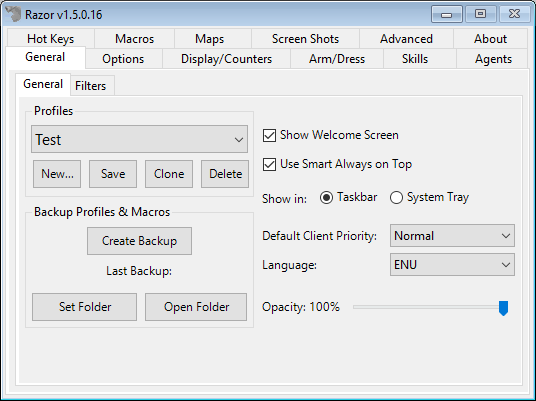
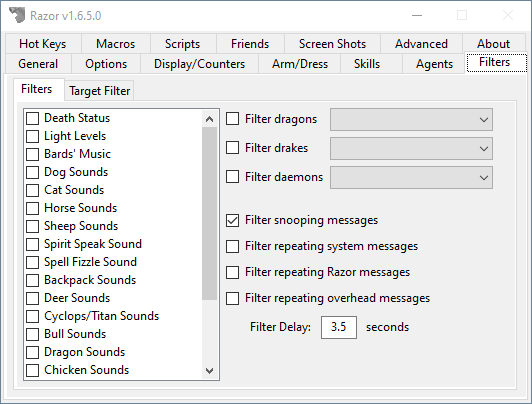
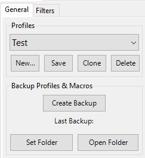

General
The General tab has setting largely related to the client itself and Razor in general.

Filters

Filters will change the way the client will display visuals or play audio.
- Sound Filters
- Allow you to block the client from playing certain sounds.
- Light Filter
- Force the client to always display 100% light levels
- Death Filter
- Prevent the "You are dead" animation from playing
- Filter dragons
- Override the dragon graphic and replace it with something else.
-
- Filter drakes
- Override the drake graphic and replace it with something else.
Profiles

Each character has a profile that contains your settings, such as the options in Razor and your hotkeys. Profiles are stored in the same location as Razor.exe under .\Profiles\. You can create a new profile, which will be based on the default profile settings
- New
- Create a new profile based off of the default Razor profile.
- Save
- Save all the current Razor settings without having to log out.
- Clone
- Clone the existing selected profile and create a new one.
- Delete
- Delete the selected profile.
Creating a new profile
Clicking New will generate a new profile based on the default profile that comes with Razor. If you rather create a new profile using an existing profile, select that profile first and click the Clone button.
Saving your profiles
Razor will save your profile two ways.
- When you open your paperdoll in UO, click Logout and click OK.
- This triggers the client to tell Razor that you logged off, which performs the profile save.
- Click the Save button manually to ensure your changes are saved.
Backing up your profiles and macros
To create a backup, click the Create Backup button. This will copy all your profiles and macros to the Backups folder in the root of your Razor folder.
In-Game Commands
Razor supports the following in-game commands (not case-sensitive):
-help- Displays all the in-game commands you see here.-adduseonce- Creates a target that adds the item to the UseOnce list.-time- Displays the current client system time.-where- Displays your X/Y/Z coordinates according to Razor. Use[whereto get your location from the server.-ping- Pings the server 5 times and returns the results.-echo- Send a message to yourself. Useful for leaving a note to yourself when macroing, for example.-getserial- Get information on the RPV you are viewing to verify authenticity.-rpvinfo- Get information on the RPV you are viewing to verify authenticity.-macro [name]- This will run a macro in-game. If you have a macro calledCreateRobesyou would type-macro CreateRobes.-hue- Display information about an item, include the hue.-item- Same as-hue.-resync- This will resync your client, the same way the resync hotkey does.-mobile- Display some general information about a mobile (used for debugging)-weather [weather_type] [num_of_effects]- Set the weather in the game. Weather will end automatically after 6 minutes, on newer clients it will end in 10 minutes.[weather_type]:0- It starts to rain1- A fierce storm approaches2- It begins to snow3- A storm is brewing
[num_of_effects]- Max number on the screen (client restriction) is 70.
-season [season_type]- Sets the season. This is client side only.[season_type]:0- Spring1- Summer2- Fall3- Winter4- Desolation (Feluccia)
Other
- Show Welcome Screen (Global Setting)
- When checked, opening Razor will give you the Welcome Screen. This is where you can enter new servers, change your client location, etc.
- Use Smart Always on Top
- Razor will stay on top of the UO window when it becomes active and hide when it becomes inactive.
- Show in Taskbar or System Tray
- You can have Razor in the Taskbar or the System Tray. It's all up to you.
- Default Client Priority
- This changes the priority given to the process. Honestly, leave it at Normal. This feature should be removed. It's old.
- Language
- The
.\Language\folder contains all the translations. Some are missing, feel free to translate based on the.enufile located in the package.
- The
- Opacity
- Adjust the transparency of Razor. Useful on a single monitor.